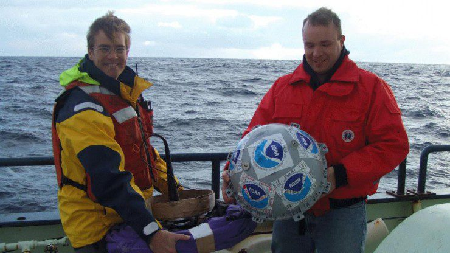

One line is one instrument
A route records what happened to a particular drifter under particular conditions. It does not describe every current in the surrounding ocean.
NOAA surface drifter records
Begin with a place. See which instruments came near it, then follow one recorded path before and after the encounter.
2024 historical observations - not real-time tracking or a forecast.
Open the atlasExample entry point
May 2024 - 36°N, 69°W
Move across the water
Before the search
A surface drifter is a small scientific instrument released into the ocean. Its float reports a sequence of positions. Read in order, those positions become a record of where the water carried it.
A fabric sea anchor called a drogue hangs about 15 meters below the surface. When the drogue is attached, the instrument follows the water more closely. After it is lost, wind and waves have more influence on the float.
That difference stays visible in every route detail.

The working prototype
Click a point in the mapped region, choose a month, and decide how close a drifter had to pass. The result shows recorded routes from the selected month.
Click the ocean to move the search point
Loading NOAA records…
Lines break when more than 12 hours are absent from this regional extract.
One instrument through time
Choose a route above, then follow its visible 2024 record before and after it came near your selected place.
No route is open yet.
Choose a drifter in the mapReading the result
A route records what happened to a particular drifter under particular conditions. It does not describe every current in the surrounding ocean.
An attached drogue helps the float follow water near 15 meters depth. After drogue loss, the path responds more strongly to wind and waves.
No result means no drifter in this extract recorded the chosen place and month. It does not mean the water stood still.
Data notes
This prototype uses 65,625 quality-controlled six-hour positions from 150 NOAA surface drifters in the western North Atlantic during 2024. That is the latest complete calendar year in the delayed-mode source used here.
Data: NOAA Global Drifter Program, six-hour interpolated quality-controlled drifter data. The map uses Natural Earth land boundaries distributed through world-atlas.
Dataset DOI NOAA source metadata Complete data document CC BY 4.0